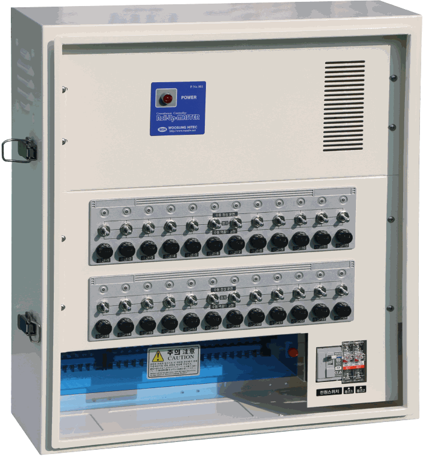
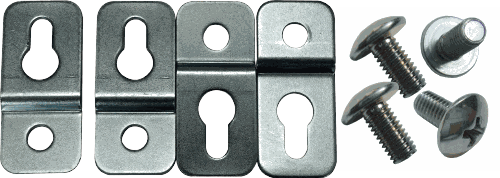

| 모델 | 연결 대수 |
|---|---|
| RMP-502 | 2대 |
| RMP-504 | 4대 |
| RMP-506 | 6대 |
| RMP-508 | 8대 |
| RMP-5012 | 12대 |
RMP·WRM시리즈
동일한 수동운전 기능을 사용하며, 연결 규모와 케이스 재질에 따라 RMP와 WRM으로 구분합니다.
RMP 플라스틱 케이스WRM 스틸 케이스출력 DC24V운전 개별 수동50W·100W 출력과 필요한 개폐라인 수에 맞춰 선택합니다.
RMP시리즈플라스틱 케이스

WRM시리즈스틸 케이스핵심 기능 카드를 눌러 장점과 확장 방법을 확인하세요.
제품 사양과 선택 기준
- 입력전압
- AC220V
- 출력전압
- DC24V
- 출력구성
- 라인당 50W 또는 100W
- 운전방식
- 각 개폐라인 스위치에 의한 개별 수동운전
- 케이스
- RMP 플라스틱 / WRM 스틸
MODEL LINEUP케이스와 출력별 모델 구성＋
RMP와 WRM은 운전 기능이 같으며, 케이스 재질과 필요한 개폐라인 수에 따라 모델명이 달라집니다.
| 모델 | 연결 대수 |
|---|---|
| WRM-5016 | 16대 |
| WRM-5020 | 20대 |
| WRM-5024 | 24대 |
| 모델 | 연결 대수 |
|---|---|
| RMP-1002 | 2대 |
| RMP-1004 | 4대 |
| RMP-1006 | 6대 |
| 모델 | 연결 대수 |
|---|---|
| WRM-1008 | 8대 |
| WRM-10012 | 12대 |
| WRM-10024 | 24대 |
연결 원칙 출력 단자 한 라인에 전동개폐기 한 대만 연결하십시오. 한 라인에 두 대 이상 연결하면 과부하로 고장 날 수 있습니다.
MANUAL OPERATION열림·정지·닫힘 운전 방법＋
각 라인의 스위치를 천천히 조작하고, 정방향과 역방향으로 급격하게 전환하지 마십시오.
상단열림 작동
적색 LED 점등
›적색 LED 점등
중립정지
LED 소등
›LED 소등
하단닫힘 작동
녹색 LED 점등
녹색 LED 점등
스위치 방향과 실제 개폐기의 회전 방향이 맞지 않으면 해당 개폐기의 전선 두 가닥을 서로 바꾸어 연결합니다. 배선 작업 전에는 반드시 전원을 차단하십시오.
STANDARD PARTS케이스별 기본 제공 부품＋
RMP 기본 제공 부품 플라스틱 케이스

설치 고정부품
플라스틱 케이스를 시설에 고정하는 브래킷과 체결부품

예비퓨즈
컨트롤러 출력 회로 보호용

사용설명서
향후 종이 설명서를 제품 QR 코드로 확인하는 디지털 설명서로 대체할 예정입니다.
WRM 기본 제공 부품 스틸 케이스

전원코드
스틸 케이스 컨트롤러의 AC 전원 연결용
설치 고정부품
스틸 케이스를 시설에 고정하는 브래킷과 체결부품
예비퓨즈
컨트롤러 출력 회로 보호용
사용설명서
향후 종이 설명서를 제품 QR 코드로 확인하는 디지털 설명서로 대체할 예정입니다.